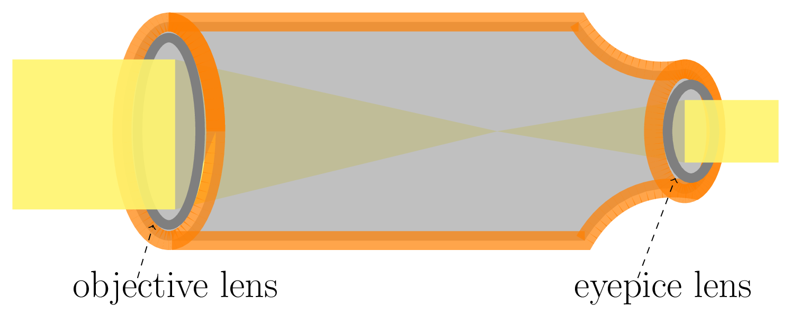
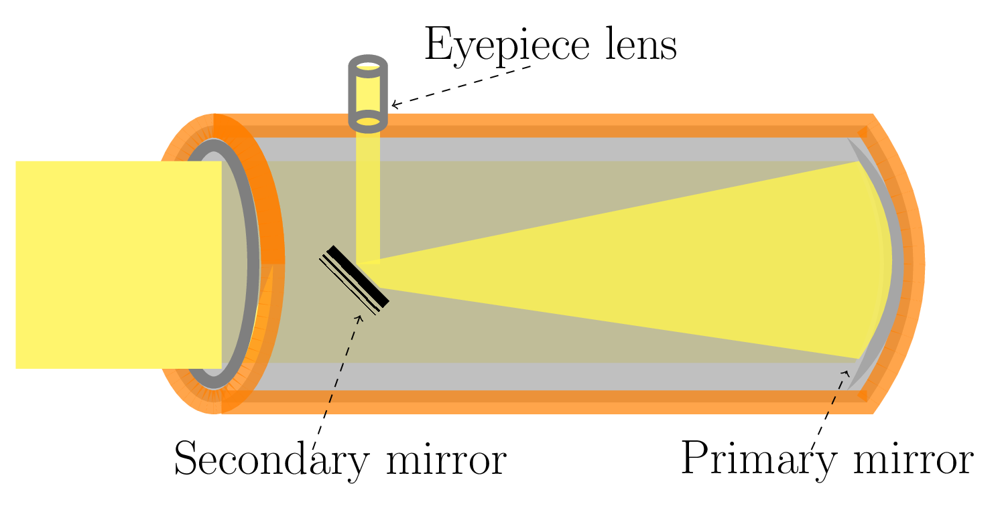
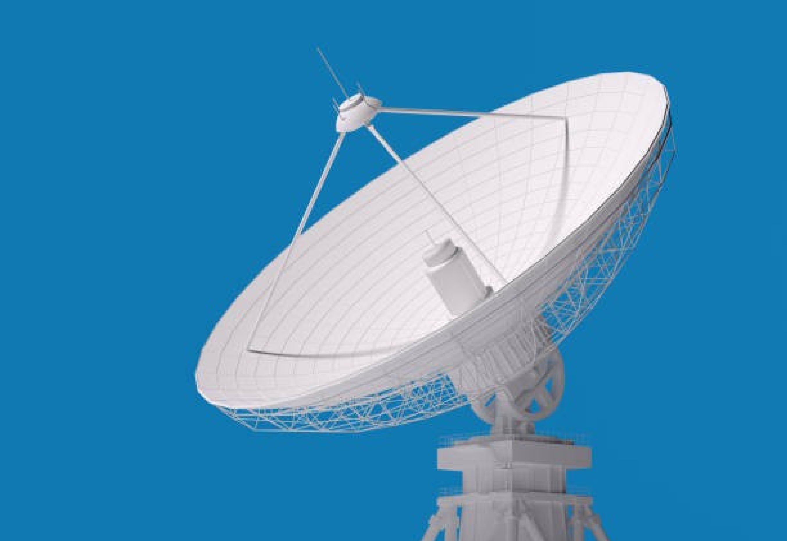
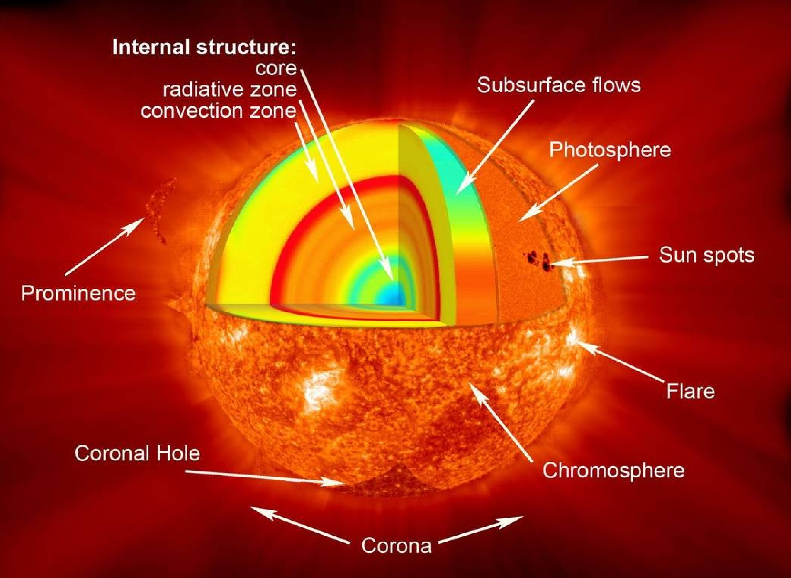

Section 13.1 Observational Astronomy
Observational astronomy is the branch of astronomy that deals with observing celestial objects and phenomena using telescopes and other instruments. It involves the collection, analysis, and interpretation of data obtained from observations of the sky. A wide range of objects such as stars, galaxies, planets, asteroids, comets, and other celestial bodies are studied under observational astronomy. Observational astronomers use telescopes, cameras, and other instruments to collect data and analyze them to draw conclusions about the nature of celestial objects. They gather data for visible light, radio waves, X-rays, and other forms of electromagnetic radiation that are coming from these objects. They may also use computer simulations to better understand what they observe.
Subsection 13.1.1 The Tools in Astronomy
The Telescope.



A telescope is an instrument used to study celestial objects such as stars, planets, galaxies, and nebulae. It works by collecting light that is coming from the distant objects. The telescope mainly consists of a lens or a mirror to collect light, and an eyepiece or a camera to view the image. There are several types of telescopes used in astronomy, such as refracting telescopes [Figure 13.1.1.(a), reflecting telescopes [Figure 13.1.1.(b)], and compound telescopes that combine both. Beside these there are also other kinds of telescope available based on what kind of electromagnetic wave is being gathered. Such as Radio telescopes: Radio telescopes [Figure 13.1.1.(c)] use radio waves to observe celestial objects. They have large dish-shaped antennas to collect radio waves and a receiver to converts the waves into electrical signals which can be analyzed. Radio telescopes are used to study radio emissions from galaxies, quasars, pulsars, and other objects. X-ray telescopes: X-ray telescopes use mirrors to focus and reflect X-rays to create an image. They are typically mounted on satellites to avoid absorption by the Earth’s atmosphere. X-ray telescopes are used to study X-ray emissions from hot gas in galaxy clusters, supernova remnants, and other objects.
The Spectrometer.
A spectrometer is an instrument used to measure the spectrum of light [Figure 7.1.6] emitted by celestial objects. It breaks down the light into its constituent colors (or wavelengths), giving the information of the chemical composition, temperature, and other physical properties of the object. Spectrometers can also be used to study the motion of celestial objects, as the Doppler shift of the spectral lines can provide information about the object’s velocity. Several types of spectrometers such as optical, infrared, ultraviolet, and X-ray spectrometers are being used in astronomy. Spectrometers have helped astronomers discover new elements and compounds in stars and galaxies. It has provided evidence for the Big Bang theory and other fundamental concepts in astrophysics.
Spectrum Analysis.
Blackbody radiation Subsection 7.1.1 is an electromagnetic radiation emitted by an object that absorbs all the radiations incident upon it, and then emits radiation of all kind in thermal equilibrium. The spectrum of blackbody radiation depends only on the temperature of the object [Figure 7.1.2], but not on its composition or other properties. The spectrum of blackbody radiation can be described by Planck’s law, which relates the energy density of radiation at a given wavelength to the temperature of the emitting object. As the temperature increases, the peak wavelength of the spectrum shifts to shorter wavelengths, and the total amount of radiation emitted increases. By analyzing the spectrum of an object, astronomers can determine its composition, temperature, and other physical properties. When a star emits light, it produces a continuous spectrum of blackbody radiation that is modified by absorption lines caused by the presence of specific chemical elements in the star’s atmosphere.
Subsection 13.1.2 The Sun
The Sun is a star located at the center of our solar system . It is a massive, glowing ball of gas born in the sky about 4.6 billion years ago. It is about 1.39 million kilometers in diameter and is mostly composed of hydrogen (about 74% of its mass) and helium (about 24% of its mass) with trace amounts of other elements. The Sun is classified as a G-type main-sequence star which is a relatively stable and has long-live. The Sun is in the continuous process of fusing hydrogen [Figure 13.1.2.(b)] into helium in its core. This fusion process releases a tremendous amount of energy in the form of light and heat, which makes the Sun shine. The Sun’s magnetic field is responsible for sunspots, [Figure 13.1.2.(a)] solar flares, and coronal mass ejections, which can have a significant impact on Earth’s climate and technology. The dark patch on the sun’s surface is known as sunspot. It is relatively cooler part of sun’s surface due to magnetic field lines. The Sun’s activity (the number of spots on the sun increases and decreases) follows an 11-year cycle, called the solar maximums and minimums.

The Sun is composed of several distinct parts. Such as Core: The core is the central region of the Sun where nuclear fusion occurs. The temperature in the core is about 15 million degrees Celsius, and the pressure is about 250 billion times greater than the surface of the Earth. In the core, hydrogen atoms are fused together to form helium, releasing a tremendous amount of energy in the process. Radiative Zone: The radiative zone is the region of the Sun where energy is transported by photons (particles of light). The energy produced in the core travels outwards through the radiative zone over a period of about 100,000 years. Convective Zone: The convective zone is the outermost layer of the Sun’s interior. The convective zone is characterized by a boiling motion which is similar to water boiling in a pot. Photosphere: The photosphere is the visible surface of the Sun. This is from where most of the light and heat we receive on Earth originate. The temperature of the photosphere is about 5,500 degrees Celsius, and it appears as a bright, yellow disk in the sky. Chromosphere: The chromosphere is the thin layer of gas above the photosphere. It is visible during a total solar eclipse as a reddish-pink ring around the Sun. The temperature of the chromosphere is about 4,000 to 20,000 degrees Celsius. Corona: The corona is the outermost layer of the Sun’s atmosphere. It extends millions of kilometers into space and is visible during a total solar eclipse as a faint, white halo around the Sun. The temperature of the corona is several million degrees Celsius, much hotter than the surface of the Sun.
Sun’s atmosphere can be detected through its characteristic absorption lines in the Sun’s spectrum [Figure 13.1.2.(c)]. Elements are created through nuclear fusion processes as the Sun fuses hydrogen into helium, the byproducts of this process can go on to create heavier elements, which eventually settle into the Sun’s interior.
Subsubsection 13.1.2.1 Solar Energy
Solar energy is generated from the sun’s radiation through a process known as nuclear fusion [Figure 13.1.2.(b)]. The high temperature and pressure in the core of a star cause the atomic nuclei to collide and merge to create a heavier nucleus and release energy in the process. The energy produced by the fusion reactions [Subsection 7.2.2] The Nuclear Fusion Reaction in a star is carried by radiation in the form of photons, which slowly make their way outwards from the core of the star. This energy is what powers the star and allows it to shine brightly in the sky. As a star ages and begins to run out of hydrogen fuel in its core, it may begin to undergo other fusion reactions that involve heavier elements. These reactions can produce even more energy, but eventually the star will exhaust all of its nuclear fuel and will either become a white dwarf, neutron star, or black hole, depending on its mass.
Subsubsection 13.1.2.2 Aurora Borealis
Auroras, also known as the Northern or Southern Lights, are natural phenomena that occur in the Earth’s upper atmosphere when charged particles from the Sun interact with the Earth’s magnetic field. The Sun constantly releases a stream of charged particles, known as the solar wind, into space. When the solar wind encounters the Earth’s magnetic field, it can cause the field lines to become distorted and create a region of charged particles trapped in the Earth’s magnetosphere. Some of these particles, primarily electrons and protons, are funneled down towards the Earth’s polar regions by the Earth’s magnetic field. When these charged particles collide with the gases in the Earth’s upper atmosphere, such as nitrogen and oxygen, they can excite the atoms and molecules, causing them to emit light. This produces the colorful and shimmering displays of light known as auroras. Green color auroras are produced by excited oxygen atoms at lower altitude in the atmosphere, while red auroras are produced by excited oxygen molecules at higher altitudes. The pink or purple hues that sometimes appear in the aurora are caused by the collision of charged particles with nitrogen molecules in the Earth’s atmosphere. Note: The term aurora borealis specifically refers to the northern lights, which are visible in the northern hemisphere. The term aurora australis refers to the southern lights, which are visible in the southern hemisphere.
Subsection 13.1.3 Stellar Distances
There are several methods used in astronomy to measure the distance of stars. Some of the most common are: Parallax Method: This method is uded to measure the distance of nearby stars. It measures the apparent shift in the position of a star when viewed from different positions in space. The distance to the star can be calculated using trigonometry with the angle between the two positions. Spectroscopic Method: This method is used to measure the distance to stars by analyzing their spectra. The spectra of stars can be used to determine their temperature, luminosity, and composition, which can be used to estimate their distance. Main Sequence Fitting: [Figure 13.2.1] This method involves comparing the brightness and temperature of a star with those of other stars whose distances have been accurately measured using other methods. By comparing the star’s characteristics to those of other stars with known distances, its distance can be estimated. Cepheid Variables: Cepheid variables are pulsating stars with a well-defined relationship between their pulsation period and their luminosity. By measuring the period of Cepheid variable star, its luminosity can be estimated, and its distance calculated. Supernova Brightness: [Figure 13.2.2] Type Ia supernovae are known to have a very consistent brightness, making them useful as standard candles for distance measurement. By comparing the observed brightness of a Type Ia supernova to its known intrinsic brightness, its distance can be calculated.
Brightness and luminosity are important factors in determining the distance of stars. Brightness, also known as apparent magnitude, is a measure of how bright a star appears to an observer on Earth. It is affected by the distance of the star, as well as other factors such as its size and temperature. A star’s brightness can be measured using a magnitude scale, with lower numbers indicating brighter stars and higher numbers indicating dimmer stars. Luminosity, on the other hand, is a measure of the total amount of energy that a star emits per unit time. It is related to the star’s size, temperature, and distance. Luminosity can be measured in terms of the sun’s luminosity, which is a standard unit of measurement.